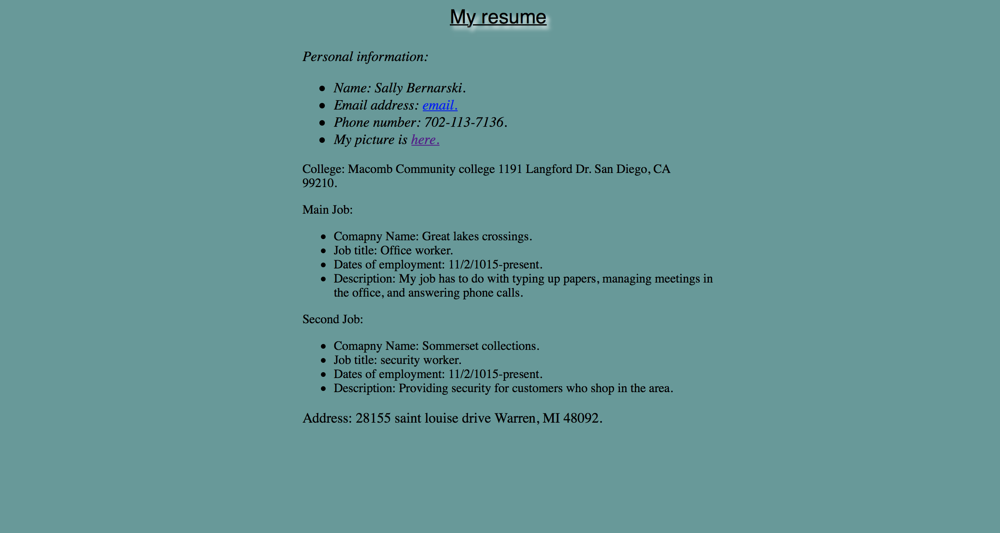
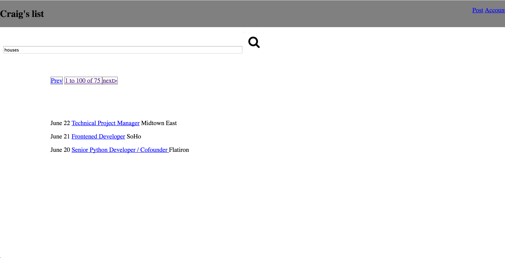
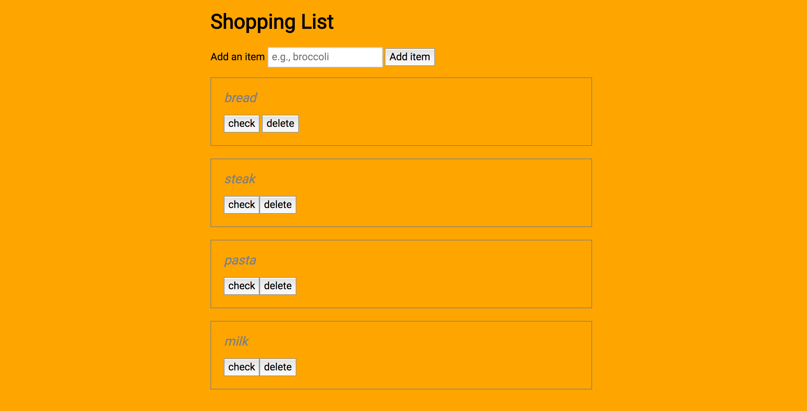

Projects that I have worked on:
List of completed projects:
-

Resume - A basic resume page focusing on the HTML, CSS.
-

Craig-list - Redesigned craigslist with a focus on clean, uncluttered, and functional design.
-

Shopping List - Used to add and remove items from a shopping list, focusing on interactivity with jQuery.
-

Quiz-App - Created a quiz game that leads the user through a series of questions, focusing on JavaScript data with JSON and arrays.
-

IP-finder - Used an IP lookup API to quickly and simply integrate IP geo-location into the website to find hostname, network, city, latitude, postal code, and route.
-

Thinkful-Tube - Built a page using APIs with a simple search form that allows the user to search YouTube videos.